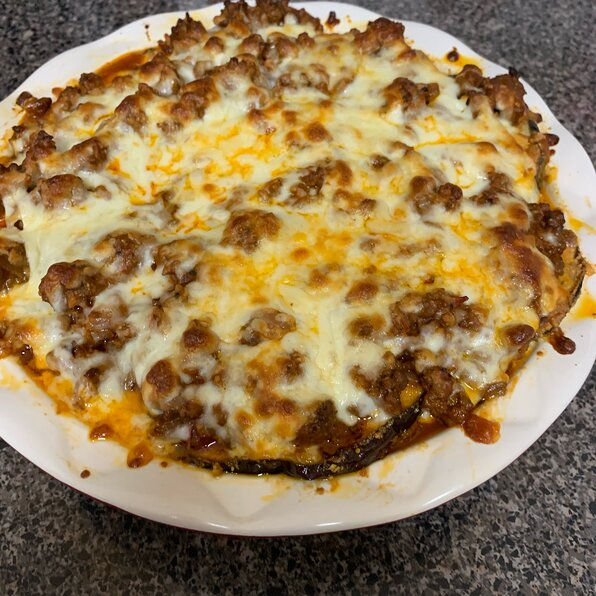

It is a delicious lasagna using eggplant instead of pasta.
This low carb lasagna recipe swaps the usual noodles for planks of thinly sliced, roasted eggplant. Eggplant is at its peak right now, so this is the ideal time to make this Eggplant Lasagna recipe!
In between the eggplant slices is a luscious, creamy mix of ricotta, spinach, Parmesan, and mushrooms. It’s a vegetarian lasagna that is hearty, filling, and comforting, just as any good lasagna recipe should be.
The comfort-factor will also be a plus for those of you who may not share my summer fervor and are eagerly awaiting the arrival of the f-word (ahem, FALL).
This Eggplant Lasagna makes excellent use of summer’s bounty, while carrying notes of the tuck-in type of cozy dinners that are soon (enough) to come.
Ingredients
- 1 teaspoon olive oil for brushing
- 2 eggs
- 2 tablespoons of water
- 1 cup grated Parmesan cheese
- 1 cup Italian-seasoned breadcrumbs
- salt and ground black pepper to taste
- 2 large eggplants, peeled and sliced into 1/2-inch rounds
- 2 tablespoons olive oil
- 1 pound ground beef
- 48 ounces chunky tomato sauce (such as Prego®)
- 2 cups shredded mozzarella cheese
Directions
- Preheat oven to 375 degrees F (190 degrees C). Oil 2 baking sheets and a 9x13-inch baking dish with 1 teaspoon olive oil.
- Whisk eggs and water together in a shallow dish. Combine Parmesan cheese, bread crumbs, salt, and ground black pepper in a separate shallow dish.
- Dip eggplant slices into egg mixture, then press each gently into bread crumb mixture. Gently tap off any excess crumbs. Arrange slices on the prepared baking sheets.
- Bake eggplant slices in the preheated oven until tops are golden brown, 20 to 25 minutes. Flip eggplant and bake an additional 20 to 25 minutes.
- Remove eggplant from the oven and increase temperature to 400 degrees F (200 degrees C).
- Heat 2 tablespoons olive oil in a skillet over medium-high heat and stir in ground beef. Season beef with salt and ground black pepper. Cook and stir until beef is browned and crumbly, about 10 minutes. Drain excess grease. Stir tomato sauce into ground beef; bring to a simmer and set sauce aside.
- Place 1/3 of the eggplant slices on bottom of the dish. Pour 1/3 of tomato sauce with ground beef on top of eggplant layer. Sprinkle 1/3 of mozzarella cheese on top of sauce layer. Repeat 2 more times, finishing with a layer of mozzarella cheese.
- Bake in the preheated oven until cheese is melted and sauce is bubbling, 10 to 15 minutes. Cool for 5 minutes before slicing.
Nutrition Facts
Per Serving:405 calories; protein 27.7g; carbohydrates 30g; fat 20.6g; cholesterol 107.8mg; sodium 1496.2mg.
Return to top
Return to main page